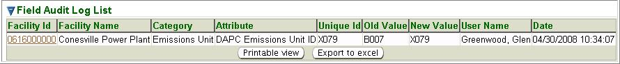

Previous Topic
Next Topic
| Tools |
Previous Topic |
Next Topic |
The system’s second-level menu, Field Audit Log, of the Tools tab allows you to select a different Category of data for a specific data field (Attribute) to find out the history of changes made to that Attribute in the system. The Field Audit Log is only tracked for specific fields pre-defined in the system, for example, Emissions Units or Permits, rather than an audit of changes to all fields in the system.
This topic contains the following sections:
You may search for a history of changes on the basis of any or all of the criteria listed below. You can fill in or choose a value for whichever fields you want to use to restrict your search.
After you complete the criteria for the search you want, and
click  ,
the system searches all of the records for all the changes stored in
its database, selects the ones that meet ALL of the
criteria you have
specified, and returns summary information about that change(s) in a
datagrid. The datagrid below is the result of a search submitted with
search criteria specified to select all AQD Emissions Unit ID
(Attribute)
changes for Facility
ID 0616000000 for the Category,
Emissions Unit:
,
the system searches all of the records for all the changes stored in
its database, selects the ones that meet ALL of the
criteria you have
specified, and returns summary information about that change(s) in a
datagrid. The datagrid below is the result of a search submitted with
search criteria specified to select all AQD Emissions Unit ID
(Attribute)
changes for Facility
ID 0616000000 for the Category,
Emissions Unit:

Field Audit Log Search Results Datagrid
The summary data returned includes columns providing Facility ID, Facility Name, Category, Attribute, Unique Id, Old Value, New Value and Date for all the changes that match your search criteria. The following summary data is further explained:
For more information about functionalities of search, input fields and datagrids, see the specific Help pages below.
Copyright © 1996, 2004, Oracle. All rights reserved.